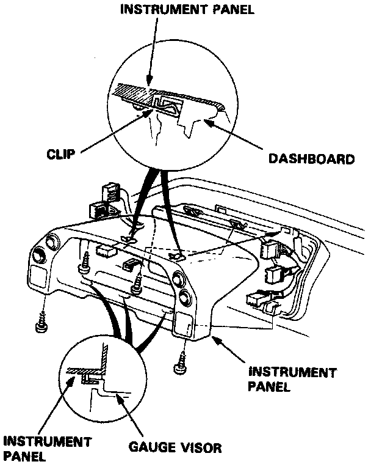
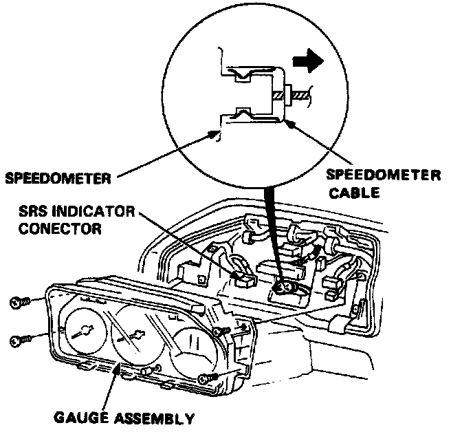

Vehicle Speed Sensor: Testing and Inspection

Removal
1. Remove the 4 screws, then remove the instrument panel from the dashboard.

2. Remove the 4 screws, then pull the gauge assembly out half-way and disconnect the speedometer cable and connectors.
3. Remove the gauge assembly from the dashboard, then turn it over.

4. Break the lead off a pencil tip, then insert into speedometer connector socket and turn it. Connect an Ohmmeter between A and B (+/-) terminals. There should be continuity 4 times between the A and B terminals per revolution.